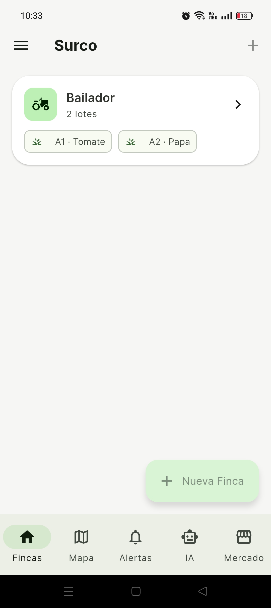
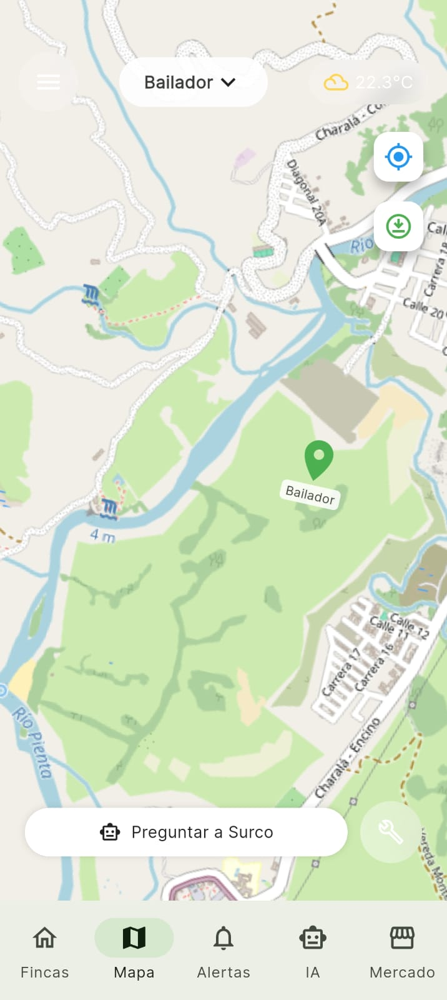
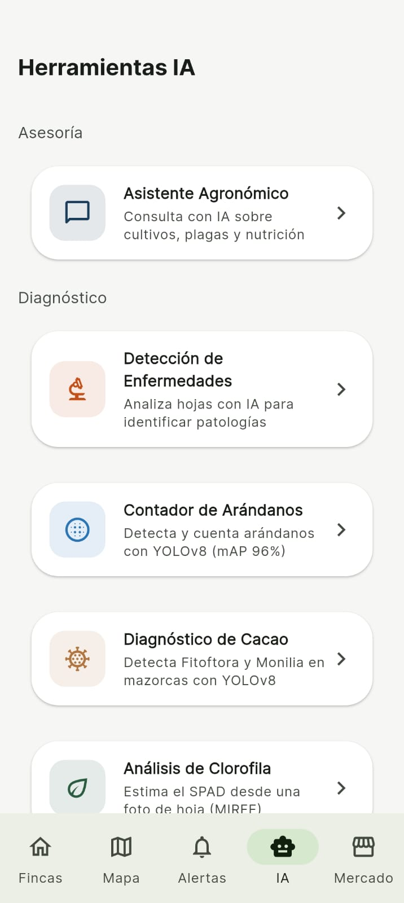
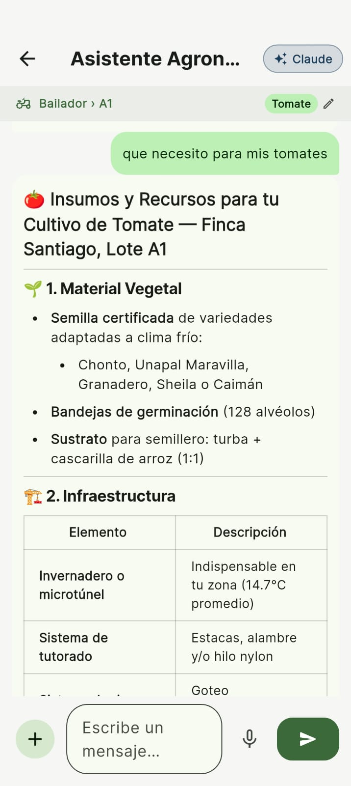
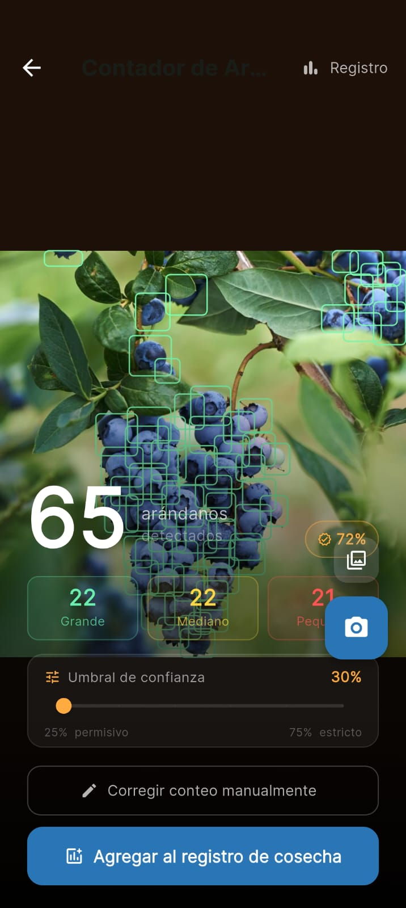
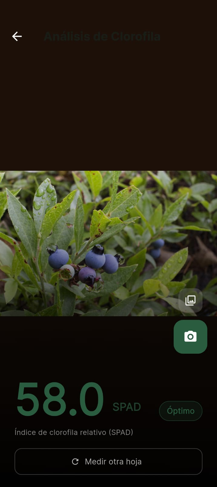
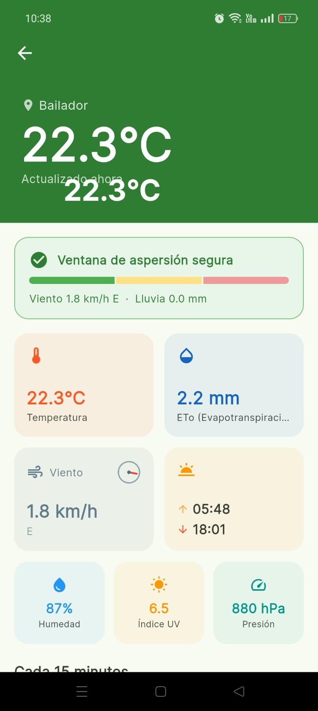

Surco lleva inteligencia artificial a tu finca colombiana. Detecta enfermedades, gestiona riego, registra labores y consulta a tu asesor agronómico — todo desde tu celular.
Desde el diagnóstico en campo hasta el análisis económico al final de la temporada.
Modelos TFLite YOLOv8. Diagnóstico sin internet.
Balance hídrico ETc×Kc por cultivo y etapa fenológica.
Grados-día acumulados para tomate, papa, maíz, lechuga y fríjol.
Estima SPAD con solo una foto. Regresión RGB calibrada.
Registra con IIH y PHI. PDF firmado para BPA/BPM.
Costos por actividad. Presupuesto vs. ejecutado.
Técnicos, trabajadores y admins con roles diferenciados.
Escala EPPO 0–9. Incidencia, presión y tendencia. Alertas automáticas al superar umbral de acción.
Panel cross-finca: IIH, fenología, condiciones de clima para aplicación y recordatorios de monitoreo.
Integración meteorológica: alertas de viento y precipitación antes de aplicar fitosanitarios. Datos en tiempo real para cada lote.
145 municipios con aptitud de cultivo, plagas comunes y zonas térmicas IGAC.
Surco identifica enfermedades en cacao, tomate y arándano directamente desde la cámara — sin conexión a internet.
El modelo TFLite YOLOv8 detecta Fitóftora y Monilia en tiempo real con un 96% de precisión (mAP50). Funciona completamente offline — ideal para zonas rurales sin señal.
Surco integra dos de los modelos más avanzados para darte recomendaciones agronómicas de nivel experto.
Claude es el motor conversacional de Surco. Con acceso al historial completo de tu finca, lote, labores, fenología y los 92 000 registros de suelo del IGAC, genera recomendaciones precisas y contextualizadas — no respuestas genéricas de internet.
Gemini potencia la capacidad de análisis visual de Surco. Procesa imágenes de hojas, frutos y suelos para complementar la detección TFLite on-device, aportando una segunda capa de inteligencia que enriquece el diagnóstico fitosanitario.
El pipeline de IA de Surco analiza tu imagen con múltiples modelos antes de responder.
Desde cualquier hoja, fruto o área. Sin equipos especiales.
ML Kit + TFLite clasifican enfermedades y estiman SPAD sin internet.
Historial de labores, fenología, suelo IGAC y clima se añaden al prompt.
Claude y Gemini responden con dosis, momentos de aplicación y alertas específicas.
Interfaz intuitiva que funciona con guantes, bajo el sol y sin señal.







Modelos fenológicos y tablas hídricas calibradas para las principales especies cultivadas en Colombia.
Cobertura completa Colombia continental + Bogotá D.C. con altitud, zona IGAC y régimen hídrico.
Fitosanidad regional cruzada con municipio y cultivo para alertas más relevantes.
Caliente, templada, fría y páramo. Clasificación automática por altitud y zona Holdridge.
Los mejores modelos de IA con infraestructura confiable para que la tecnología no sea un obstáculo.
Asesor conversacional con contexto completo de finca, lote e historial de labores.
Análisis visual multimodal para diagnóstico fitosanitario desde imágenes de campo.
App nativa Android e iOS desde un único código base optimizado para campo.
Inferencia YOLOv8 directamente en tu teléfono. Sin internet, sin demora.
Autenticación segura, sincronización en la nube y Crashlytics para máxima estabilidad.
Persistencia local robusta. Trabaja offline y sincroniza cuando tengas señal.
92K registros de suelo pre-procesados para contexto agronómico preciso.
Descarga Surco gratis y lleva el primer asesor agronómico con IA a tu finca colombiana.